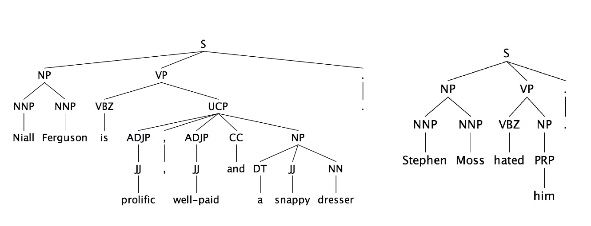
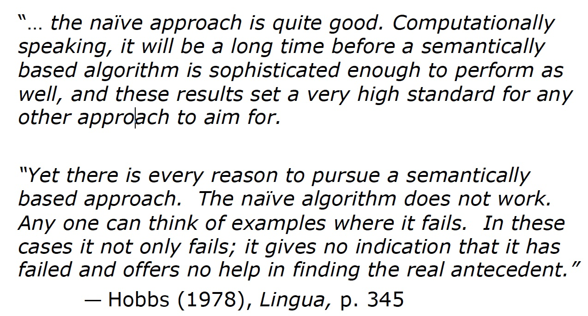
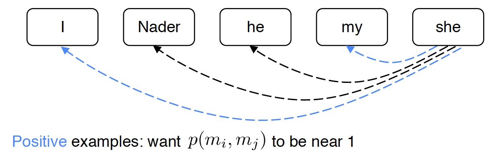
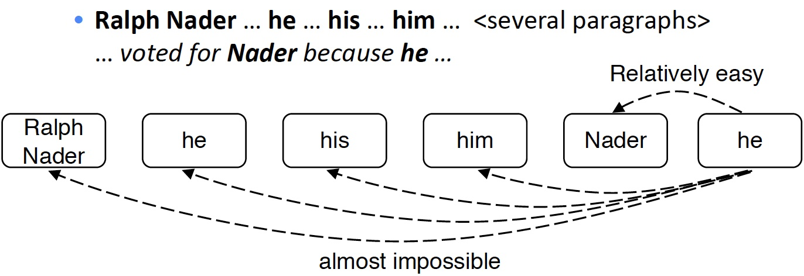
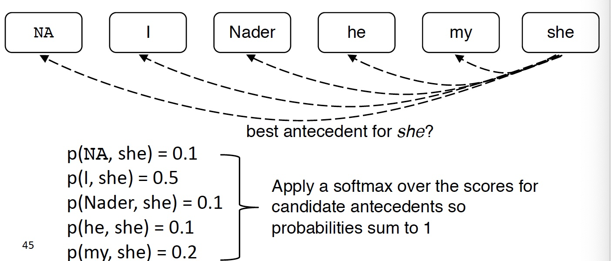
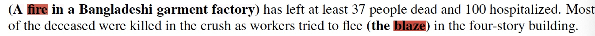
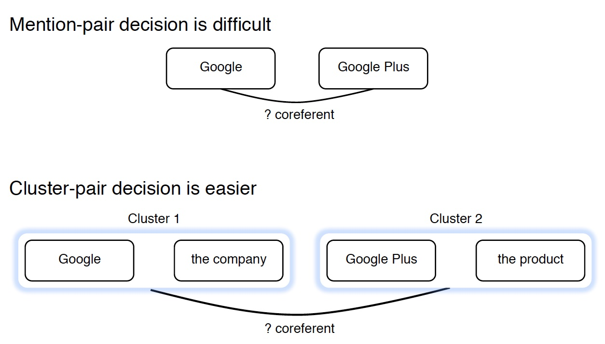
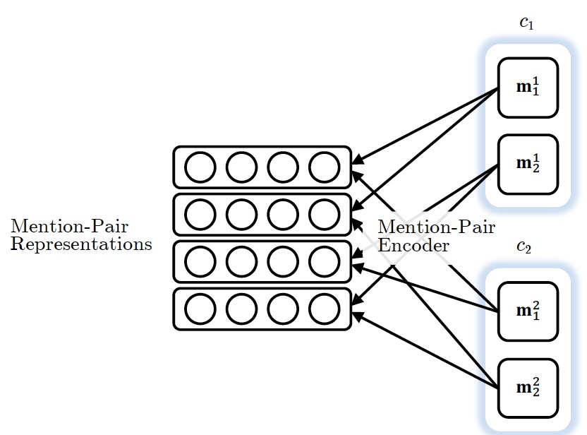
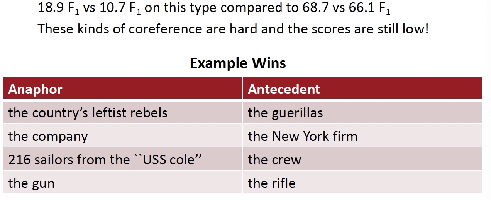

16 Coreference Resolution
Lecture 16 Coreference Resolution¶
Lecture Plan
- What is Coreference Resolution? (15 mins)
- Applications of coreference resolution (5 mins)
- Mention Detection (5 mins)
- Some Linguistics: Types of Reference (5 mins) Four Kinds of Coreference Resolution Models
- Rule-based (Hobbs Algorithm) (10 mins)
- Mention-pair models (10 mins)
-
Mention ranking models (15 mins)
- Including the current state-of-the-art coreference system!
-
Mention clustering model (5 mins – only partial coverage)
-
Evaluation and current results (10 mins)
1. What is Coreference Resolution?¶
- 识别所有涉及到相同现实世界实体的 提及
- He, her 都是实体的提及 mentions of entities


Applications
- 全文理解
- 信息提取, 回答问题, 总结, …
- “他生于1961年”(谁?)
- 机器翻译
- 语言对性别，数量等有不同的特征


- 对话系统

Coreference Resolution in Two Steps

3. Mention Detection¶
- Mention : 指向某个实体的一段文本
-
三种 mention
-
Pronouns 代词
- I, your, it, she, him, etc.
- 因为代词是 POS 检测结果的一种，所以只要使用 POS 检测器即可
- Named entities 命名实体
- People, places, etc.
- Use a NER system (like hw3)
-
Noun phrases 名词短语
- “a dog,” “the big fluffy cat stuck in the tree”
- Use a parser (especially a 依存解析器 constituency parser – next week!)
-
Marking all pronouns, named entities, and NPs as mentions over-generates mentions
- Are these mentions?
- It is sunny
- Every student
- No student
- The best donut in the world
- 100 miles
How to deal with these bad mentions?
- 可以训练一个分类器过滤掉 spurious mentions
- 更为常见的：保持所有 mentions 作为 “candidate mentions”
- 在你的共指系统运行完成后，丢弃所有的单个引用(即没有被标记为与其他任何东西共同引用的)
Can we avoid a pipelined system?
- 我们可以训练一个专门用于 mention 检测的分类器，而不是使用POS标记器、NER系统和解析器。
- 甚至端到端共同完成 mention 检测和共指解析，而不是两步
4. On to Coreference! First, some linguistics¶
- Coreference is when two mentions refer to the same entity in the world 当两个 mention 指向世界上的同一个实体时，被称为共指
- Barack Obama 和 Obama
- 相关的语言概念是 anaphora 回指：when a term (anaphor) refers to another term (antecedent) 下文的词返指或代替上文的词
- anaphor 的解释在某种程度上取决于 antecedent 先行词的解释

Anaphora vs Coreference
 Not all anaphoric relations are coreferential
Not all anaphoric relations are coreferential
-
Not all noun phrases have reference 不是所有的名词短语都有指代
- Every dancer twisted her knee
- No dancer twisted her knee
- 每一个句子有三个NPs；因为第一个是非指示性的，另外两个也不是
-
Not all anaphoric relations are coreferential
- We went to see a concert last night. The tickets were really expensive.
- 这被称为桥接回指 bridging anaphora

-
通常先行词在回指（例如代词）之前，但并不总是
Cataphora

Four Kinds of Coreference Models
- Rule-based (pronominal anaphora resolution)
- Mention Pair
- Mention Ranking
- Clustering
5. Traditional pronominal anaphora resolution:Hobbs’ naive algorithm¶
该算法仅用于寻找代词的参考，也可以延伸到其他案例
- Begin at the NP immediately dominating the pronoun
- Go up tree to first NP or S. Call this X, and the path p.
- Traverse all branches below X to the left of p, left-to-right,breadth-first. Propose as antecedent any NP that has a NP or Sbetween it and X
- If X is the highest S in the sentence, traverse the parse trees ofthe previous sentences in the order of recency. Traverse eachtree left-to-right, breadth first. When an NP is encountered,propose as antecedent. If X not the highest node, go to step 5.
- From node X, go up the tree to the first NP or S. Call it X, andthe path p.
- If X is an NP and the path p to X came from a non-head phraseof X (a specifier or adjunct, such as a possessive, PP, apposition, orrelative clause), propose X as antecedent(The original said “did not pass through the N’ that X immediatelydominates”, but the Penn Treebank grammar lacks N’ nodes….)
- Traverse all branches below X to the left of the path, in a leftto-right, breadth first manner. Propose any NP encountered asthe antecedent
- If X is an S node, traverse all branches of X to the right of thepath but do not go below any NP or S encountered. Proposeany NP as the antecedent.9. Go to step 4
Hobbs Algorithm Example

这是一个很简单、但效果很好的共指消解的 baseline
Knowledge-based Pronominal Coreference

- 第一个例子中，两个句子具有相同的语法结构，但是出于外部世界知识，我们能够知道倒水之后，满的是杯子（第一个 it 指向的是 the cup），空的是壶（第二个 it 指向的是 the pitcher）
- 可以将世界知识编码成共指问题
Hobbs’ algorithm: commentary

6. Coreference Models: Mention Pair¶

- 训练一个二元分类器，为每一对 mention 的分配共参的概率 p(m_i,m_j)
- 例如，为了寻找 “she” 的共指，查看所有候选先行词(以前出现的 mention )，并确定哪些与之相关



- 文章的 N 个 mention
- 如果 m_i 和 m_j 是共指的，则 y_{ij} = 1 ，否则 y_{ij} = -1
- 只是训练正常的交叉熵损失(看起来有点不同，因为它是二元分类)

- 遍历 mentions
- 遍历候选先行词(前面出现的 mention)
- 共指 mention 对应该得到高概率，其他应该得到低概率
Mention Pair Test Time
- 共指解析是一项聚类任务，但是我们只是对 mentions 对进行了评分……该怎么办？
- 选择一些阈值(例如0.5)，并将 p(m_i,m_j) 在阈值以上的 mentions 对之间添加共指链接
- 利用传递闭包得到聚类


- 共指连接具有传递性，即使没有不存在 link 的两者也会由于传递性，处于同一个聚类中

- 这是十分危险的
- 如果有一个共指 link 判断错误，就会导致两个 cluster 被错误地合并了
Mention Pair Models: Disadvantage
- 假设我们的长文档里有如下的 mentions

- 许多 mentions 只有一个清晰的先行词
- 但我们要求模型来预测它们
- 解决方案：相反，训练模型为每个 mention 只预测一个先行词
- 在语言上更合理
7. Coreference Models: Mention Ranking¶
- 根据模型把其得分最高的先行词分配给每个 mention
- 虚拟的 NA mention 允许模型拒绝将当前 mention 与任何内容联系起来(“singleton” or “first” mention)
- first mention： I 只能选择 NA 作为自己的先行词




Coreference Models: Training
- 我们希望当前 mention m_j 与它所关联的任何一个候选先行词相关联。
- 在数学上，我们可能想要最大化这个概率

- 公式解析
- 遍历候选先行词集合
- 对于 y_{ij} = 1 的情况，即 m_i 与 m_j 是共指关系的情况
- 我们希望模型能够给予其高可能性
- 该模型可以为一个正确的先行词产生概率 0.9 ，而对其他所有产生较低的概率，并且总和仍然很大
- Turning this into a loss function

Mention Ranking Models: Test Time
和 mention-pair 模型几乎一样，除了每个 mention 只分配一个先行词
 How do we compute the probabilities?
How do we compute the probabilities?
A. Non-neural statistical classifier
B. Simple neural network
C. More advanced model using LSTMs, attention
A. Non-Neural Coref Model: Features

- 使用如下特征进行分类
- 人、数字、性别
- 语义相容性
- 句法约束
- 更近的提到的实体是个可能的参考对象
- 语法角色：偏好主语位置的实体
- 排比
B. Neural Coref Model
- 标准的前馈神经网络
- 输入层：词嵌入和一些类别特征

Neural Coref Model: Inputs
- 嵌入
- 每个 mention 的前两个单词，第一个单词，最后一个单词，head word，…
- head word是 mention 中“最重要”的单词—可以使用解析器找到它
- 例如：The fluffy cat stuck in the tree
- 每个 mention 的前两个单词，第一个单词，最后一个单词，head word，…
- 仍然需要一些其他特征
- 距离
- 文档体裁
- 说话者的信息
C. End-to-end Model¶
- 当前最先进的模型算法(Kenton Lee et al. from UW, EMNLP 2017)
- Mention 排名模型
- 改进了简单的前馈神经网络
- 使用LSTM
- 使用注意力
- 端到端的完成 mention 检测和共指
- 没有 mention 检测步骤！
- 而是考虑每段文本(一定长度)作为候选 mention
- a span 是一个连续的序列
End-to-end Model
-
首先将文档里的单词使用词嵌入矩阵和 charCNN embed 为词嵌入
-
接着在文档上运行双向 LSTM
-
接着将每段文本 i 从 \text{START}(i) 到 \text{END}(i) 表示为一个向量
- span 是句子中任何单词的连续子句
- General, General Electric, General Electric said, … Electric, Electric said, …都会得到它自己的向量表示
- span representation
\boldsymbol{g}_{i}=\left[\boldsymbol{x}_{\operatorname{START}(i)}^{*}, \boldsymbol{x}_{\mathrm{END}(i)}^{*}, \hat{\boldsymbol{x}}_{i}, \phi(i)\right]- 例如 “the postal service”

- \hat{\boldsymbol{x}}_{i} 是 span 的注意力加权平均的词向量

- 为什么要在 span 中引入所有的这些不同的项

- 最后，为每个 span 对打分来决定他们是不是共指 mentions

- 打分函数以 span representations 作为输入

- 为每对 span 打分是棘手的
- 一个文档中有 O(T^2) spans，T 是词的个数
- O(T^4) 的运行时间
- 所以必须做大量的修剪工作(只考虑一些可能是 mention 的span)
- 关注学习哪些单词是重要的在提到(有点像head word)

8. Last Coreference Approach: Clustering-Bas¶
- 共指是个聚类任务，让我们使用一个聚类算法吧
- 特别是我们将使用 agglomerative 凝聚聚类 自下而上的
- 开始时，每个 mention 在它自己的单独集群中
- 每一步合并两个集群
- 使用模型来打分那些聚类合并是好的


Clustering Model Architecture
From Clark & Manning, 2016

- 首先为每个 mention 对生成一个向量
- 例如，前馈神经网络模型中的隐藏层的输出

- 接着将池化操作应用于 mentino-pair 表示的矩阵上，得到一个 cluster-pair 聚类对的表示

- 通过用权重向量与表示向量的点积，对 candidate cluster merge 进行评分
- s\left(\operatorname{MERGE}\left[c_{1}, c_{2}\right]\right)=u^{T} r_{c}\left(c_{1}, c_{2}\right)
- 当前候选簇的合并，取决于之前的合并
- 所以不能用常规的监督学习
- 使用类似强化学习训练模型
- 为每个合并分配奖励：共指评价指标的变化
9. Coreference Evaluation¶
- 许多不同的评价指标：MUC, CEAF, LEA, B-CUBED, BLANC
- 经常使用一些不同评价指标的均值
- 例如 B-cubed
- 对于每个 mention ，计算其准确率和召回率
- 然后平均每个个体的准确率和召回率


System Performance
- OntoNotes数据集:~ 3000人类标注的文档
- 英语和中文
- Report an F1 score averaged over 3 coreference metrics

Where do neural scoring models help?
- 特别是对于没有字符串匹配的NPs和命名实体。神经与非神经评分:

Conclusion
- 共指是一个有用的、具有挑战性和有趣的语言任务
- 许多不同种类的算法系统
- 系统迅速好转，很大程度上是由于更好的神经模型
- 但总的来说,还没有惊人的结果
- Try out a coreference system yourself
- http://corenlp.run/ (ask for coref in Annotations)
- https://huggingface.co/coref/
Reference¶
以下是学习本课程时的可用参考书籍：
《基于深度学习的自然语言处理》 （车万翔老师等翻译）
以下是整理笔记的过程中参考的博客：
斯坦福CS224N深度学习自然语言处理2019冬学习笔记目录 (课件核心内容的提炼，并包含作者的见解与建议)
斯坦福大学 CS224n自然语言处理与深度学习笔记汇总 这是针对note部分的翻译